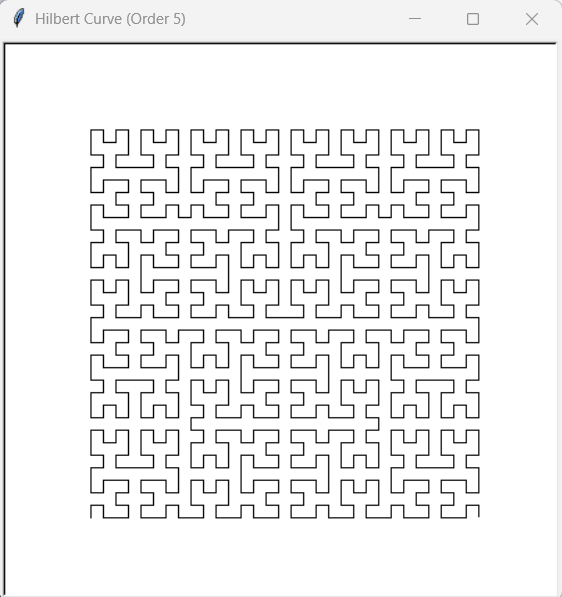
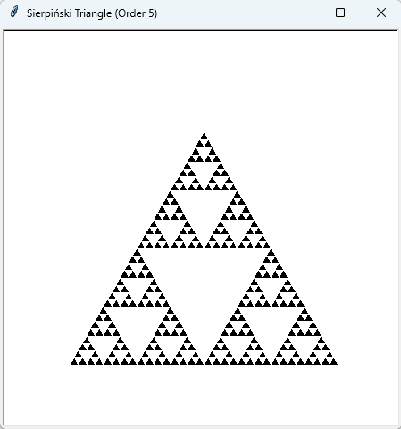

Jak na to, a příklady:
Generování fraktálů
Fraktály se nám na první pohled mohou zdát velmi složité a nepředvídatelné. Díky samopodobnosti má však mnoho z nich poměrně jednoduchý iterativní předpis, pomocí kterého je můžeme snadno generovat s využitím několika málo řádek kódu.
Níže jsou uvedeny kraťoulinké příklady pythonských skriptů, které generují fraktály s využitím modulu Turtle.
Hilbertova křivka
Kód:
import turtle
def hilbert_curve(t, order, size, angle=90):
"""
Draws a Hilbert curve of a given order using the turtle module.
:param t: The turtle object.
:param order: The order of the Hilbert curve.
:param size: The length of each segment of the curve.
:param angle: The turning angle (default is 90 degrees).
"""
if order == 0:
return
# Draw 4 copies of order-1 Hilbert curve
t.left(angle)
hilbert_curve(t, order - 1, size, -angle)
t.forward(size)
t.right(angle)
hilbert_curve(t, order - 1, size, angle)
t.forward(size)
hilbert_curve(t, order - 1, size, angle)
t.right(angle)
t.forward(size)
hilbert_curve(t, order - 1, size, -angle)
t.left(angle)
def draw_hilbert(order, size):
"""
Sets up the turtle environment and draws a Hilbert curve.
:param order: The order of the Hilbert curve.
:param size: The size of each segment.
"""
# Screen setup
screen = turtle.Screen()
screen.setup(450, 450)
screen.bgcolor("white")
screen.title(f"Hilbert Curve (Order {order})")
# Create a turtle object
t = turtle.Turtle()
t.speed(0) # Fastest drawing
t.penup()
# Position the turtle at the starting point
offset = size * (2**order - 1) / 2
t.goto(-offset, -offset)
t.pendown()
# Draw the Hilbert curve
hilbert_curve(t, order, size)
# Complete the drawing
t.hideturtle()
screen.mainloop()
draw_hilbert(order=5, size=10)
Výsledek:
Sierpińského trojúhelník
Kód:
import turtle
def sierpinski_triangle(t, order, size):
"""
Draws a Sierpiński triangle of a given order using the turtle module.
:param t: The turtle object.
:param order: The order of the Sierpiński triangle.
:param size: The length of the sides of the triangle.
"""
if order == 0:
# Base case: Draw an equilateral triangle
t.begin_fill()
for _ in range(3):
t.forward(size)
t.right(120)
t.end_fill()
else:
# Recursive case: Divide into 3 smaller triangles
sierpinski_triangle(t, order - 1, size / 2)
t.forward(size / 2)
sierpinski_triangle(t, order - 1, size / 2)
t.backward(size / 2)
t.right(60)
t.forward(size / 2)
t.left(60)
sierpinski_triangle(t, order - 1, size / 2)
t.right(60)
t.backward(size / 2)
t.left(60)
# Main function to set up the turtle environment and draw the Sierpiński triangle
def draw_sierpinski(order, size):
"""
Sets up the turtle environment and draws a Sierpiński triangle.
:param order: The order of the Sierpiński triangle.
:param size: The size of the triangle's sides.
"""
screen = turtle.Screen()
screen.setup(450, 450)
screen.bgcolor("white")
screen.title(f"Sierpiński Triangle (Order {order})")
# Create a turtle object
t = turtle.Turtle()
t.speed(0) # Fastest drawing
t.penup()
# Position the turtle at the starting point
t.goto(-size / 2, -size / 2) # Center bottom of the triangle
t.left(60)
# Draw the Sierpiński triangle
sierpinski_triangle(t, order, size)
# Complete the drawing
t.hideturtle()
screen.mainloop()
# Example usage
draw_sierpinski(order=5, size=300)
Výsledek:
